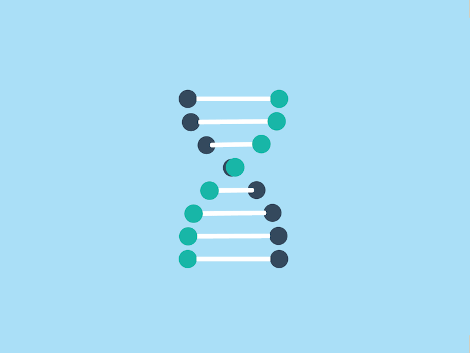

About Me
Hello!
I'm Muhammed ElRakabawi a front-end developer and Perl programmer from Egypt, I'm 21 years old studying biotechnological sciences where we can re-engineer organism's genetic material (a.k.a DNA) to develop or make new products.
Chapter one: Work!

First of all, i shall assume you were directed here from my website or just arrived here through Google or some sort of search engine.
So, i'll hurry up in that part.
Ehhm (clearing throat): I'm just another front-end web developer, i'm obsessed with user interaction design and web applications development. Every project starts with an initial idea that turns into prototypes, mockups and wireframes for the user experience design process then after everything is settled down, i start the development stage which includes visual design, coding and testing.
I rather prefer to call myself interaction designer, as i devote the most part of my work time to this stage of creating new ideas and different user experiences (it had been a problem for me since then, cause i didn't worked in client-based freelancing, i wanted more .. startups!)
I've been into Computer science and development since 2008, when i was 11 years old. I started to learn programming and security, i started with python, delphi and c#, Then i moved to PHP and Javascript. In 2014 i learnt algorithms and data structures in advanced structural C++ and joined the Egyptian Olympiads in informatics .. at April i got a bronze medal but i wasn't selected for continuing to the international olympiads.
Now i'm coding Perl for my Bioinformatics tools development, And Vue/Web3 for my work at Lamarkaz.
My skills in Front-end development are HTML/CSS, JS, jQuery, NodeJS, Git, Vue, Angular and Web3.
Chapter two: Academia!

Now you are not forced to continue if you came for the info above, but i grantee it's the most beautiful part.
I'm in love with science, specifically saying biological sciences (i.e Biomolecular sciences, Biotechnology, Biochemistry .. etc) and Computational neuroscience.
This year when i was at my last high school year, i joined the first brain sciences competition ever in Egypt called Egyptian Brain Bee it was about neurobiology, anatomy, histology and psychological disorders. I was qualified to be one of the 10 winners that attended the final phase at Alexandria faculty of Medicine, but happily a friend was selected out of the ten to attend the final international competition, at that point my interest in neuroscience fired. I started in my own pet research in Theoretical(Computational) neuroscience about the technique of which neocortex(the part responsible for your sensory processing) applies to new informations.
On parallel, i grew interest for Cytogenetics, Evolutionary biology and Biological emergence, then i enrolled in faculty of biotechnology at my beloved university to begin my learning journey.
I wish i could join some undergraduate research summer programs, to finish my studies, join a Biomolecular master degree program in Sweden(yes, Sweden is outstanding!) then work in one of these domains: Abiogenesis(Biochemistry research), Cytology genetics, Theoretical neuroscience.
Note: copyrights of the graphics here goes to it's creators at dribbble (Thanks!)